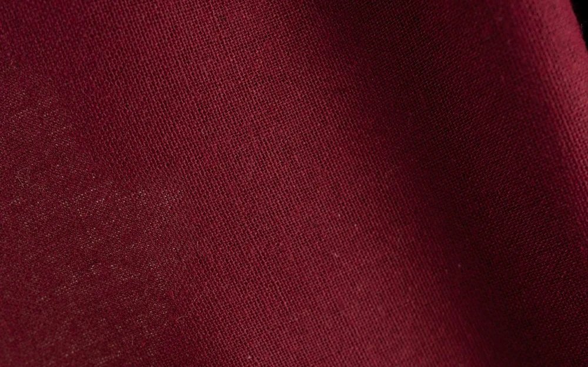
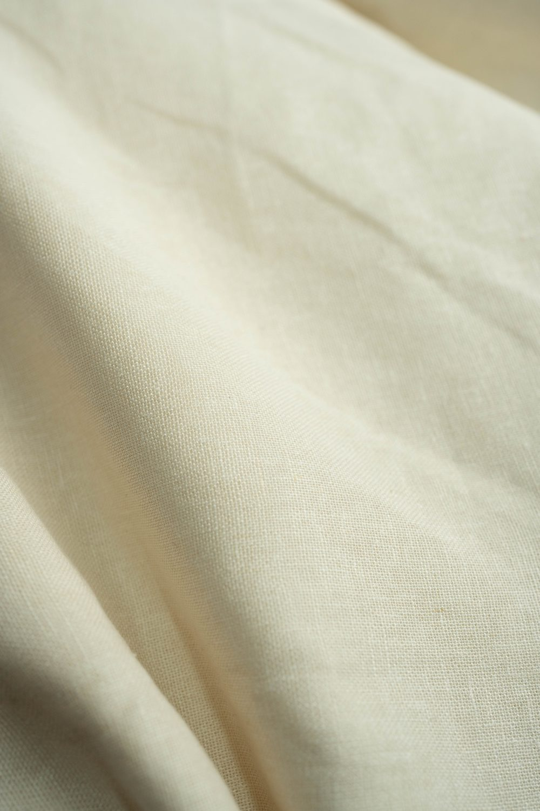
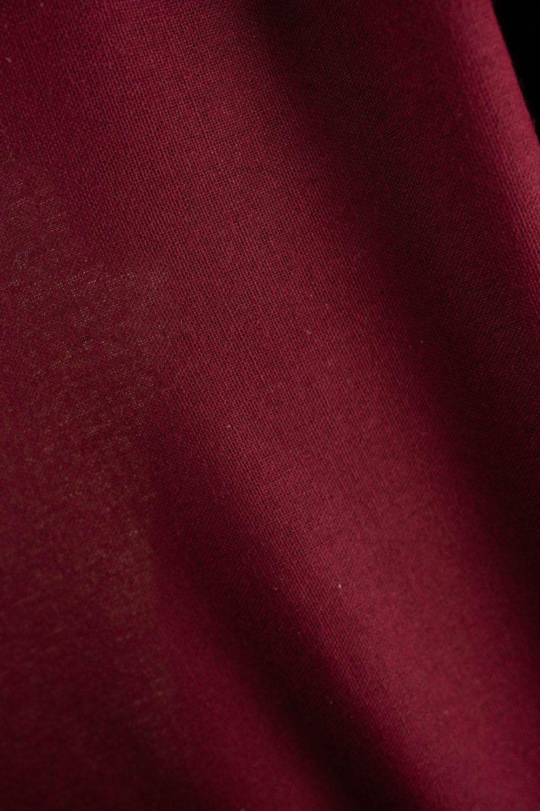
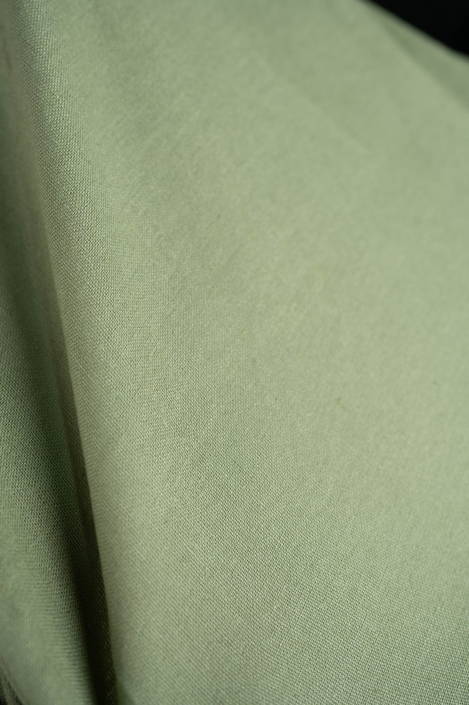
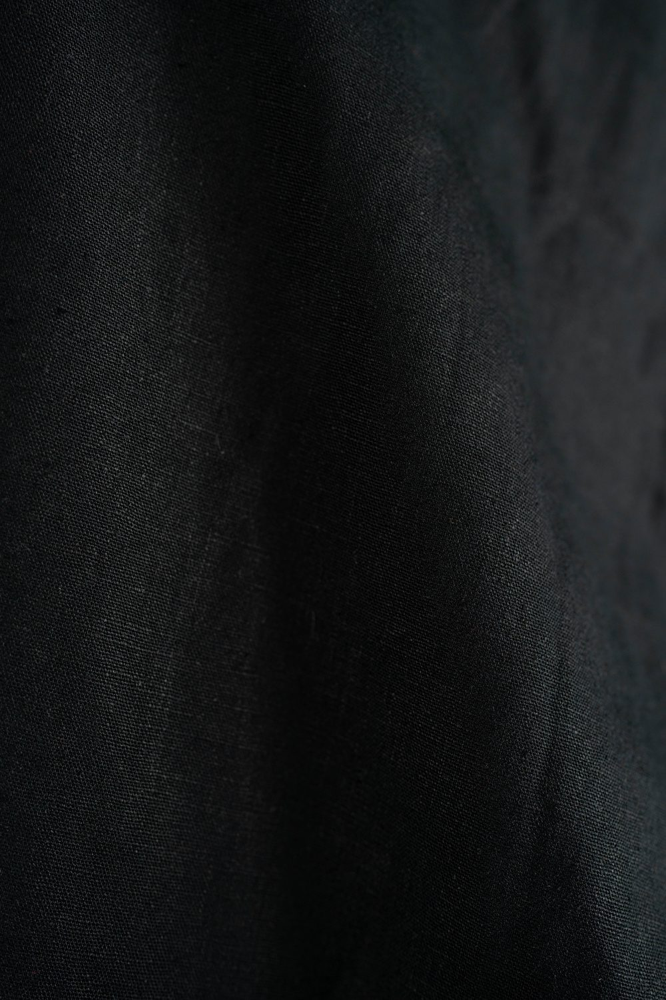
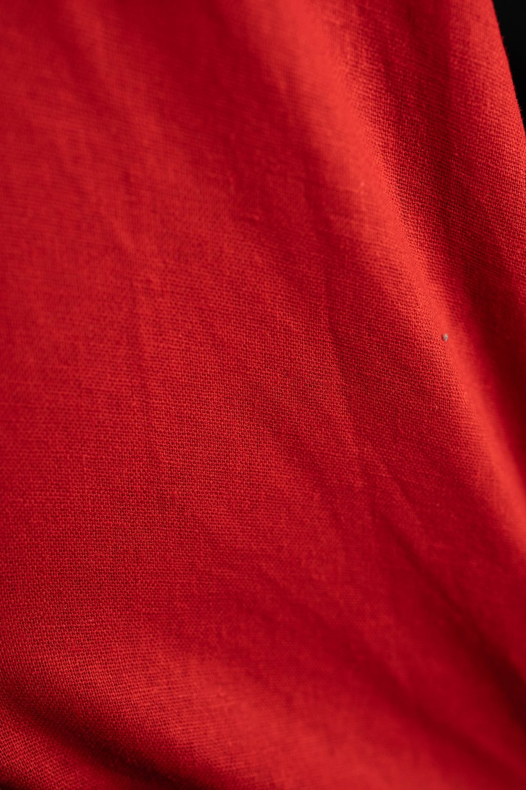
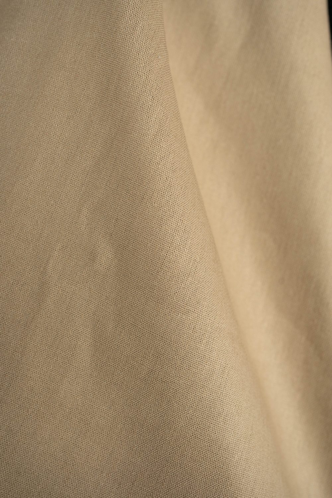
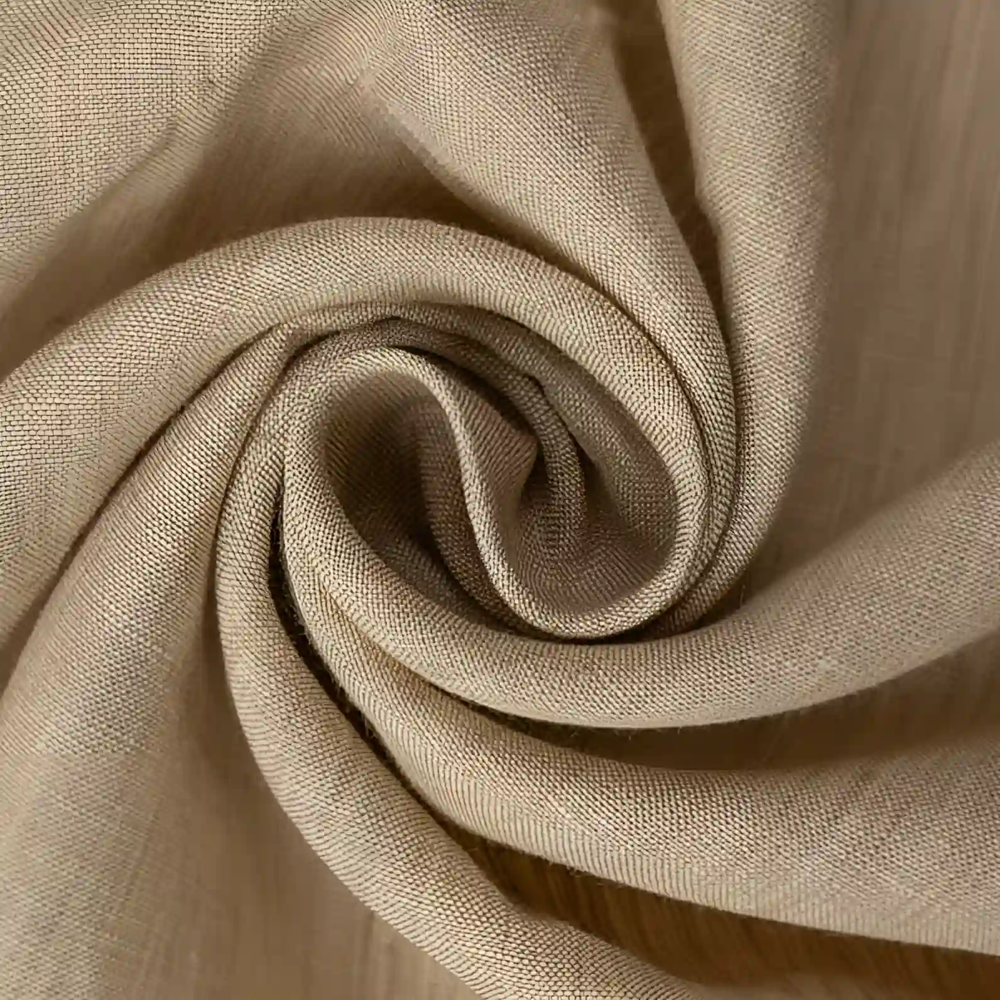

A gateway to Timeless Linen
At Cintamani, we step back from fleeting trends to celebrate something more enduring. Rooted in the quiet beauty of Sri Lankan heritage and the ease of simply being human, we craft effortless linen silhouettes made for everyday living.
Step into a space where Sri Lankan heritage, quiet elegance, and honest craft come together. Rooted in pure linen—a fabric natural to our tropical rhythms, every piece is tailored to order across twenty rich hues. Whether exploring our core women’s silhouettes or limited-edition drops, Cintamani invites you to enjoy a thoughtful shopping experience and clothing meant to be cherished.

(Slow Craft)
.jpg)
.jpg)
Tailored
For
.jpg)
Her
Deep appreciation for island living’s grace woven into modern linen.
Cintamani was born out of reverence for Sri Lanka’s heritage and a desire to bring timeless ease into modern wardrobes. Linen is more than just our chosen fabric—we believe it is a textile made for our island rhythms, carrying an effortless drape and quiet dignity.
We honor this spirit through thoughtful women’s silhouettes tailored for everyday comfort. Sewn with patience and intention, every piece—available across twenty-four hand-curated hues, celebrates natural textures, the human hands behind each stitch, and the enduring beauty of genuine slow craft.
HEART
OF CINTAMANI
_up.jpg)
A Timeless Linen Tradition
With a history reaching back thousands of years, linen remains one of the world’s most honest and enduring natural materials. While its roots span ancient civilizations, we believe linen truly finds its purpose here—crafted for island life and the simple art of being human.
Turning flax into breathable, long-lasting cloth demands time and deep respect for every step of the craft. Linen holds a unique, lived-in texture that softens over time, framing everyday memories in quiet luxury while honoring both the maker’s hands and the wearer’s comfort.
More than an organic textile, linen is a way of moving through the world—effortless, breathable, and rooted in natural ease. Shaped for our island rhythms, each Cintamani piece invites you to slow down and experience pure, quiet comfort.
.jpg)
.jpg)

.jpg)


.jpg)


.jpg)

Linen wear is a testament to humanity’s rich textile heritage. From its ancient origins to its modern revival, this natural craft has evolved into a symbol of quiet luxury and aesthetic excellence.
300%
Tactile Luxury
- Highlight: The hollow structure of linen fibers allows continuous airflow and rapid moisture absorption, keeping the body cool in high heat.
- Significance: Unlike synthetic textiles, natural linen develops a distinctive slub texture and soft, organic drape that elevates any silhouette.

(Fluid, unbleached linen fabric showcasing soft organic folds in natural light)

(Close-up weave highlighting the characteristic tactile slubs and breathable pore space)
2026
Timeless Elegance
- Highlight: Cintamani translates ancient textile wisdom into contemporary, relaxed silhouettes designed for conscious, everyday living.
- Significance: Each garment is thoughtfully cut to honor the fabric’s natural movement, offering quiet luxury without compromise.
.jpg)
(Relaxed office set in black linen, styled at the Walawwa piano)

(Minimalist two-piece set in ivory, cut for easy everyday movement)
.jpg)
(Elegant open back dress in burgundy on the Walawwa staircase)
Crafting Linen since
.jpg)